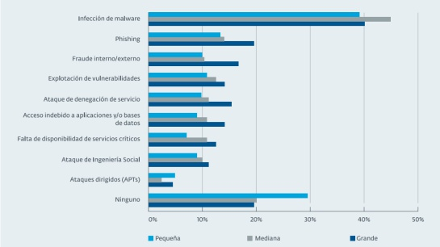

Colombia se sitúa en el tercer lugar en el ranking de países más atacados cibernéticamente, en general las plataformas del sistema de la seguridad social son las preferidas por los Hackers, la herramienta más común para lograr tener éxito, es el Malware ocupando la primera posición. Las empresas Colombianas no tienen una buena percepción del riesgo que existe y las consecuencias que esto pude ocasionar, según Fortinet el 80% de las empresas tienen un sistema de seguridad muy vulnerable mientras que el 20% restante no cuentan con sistemas que permitan proteger su información de estos ataques, lo que provoca pérdidas cuantiosas y un elevado costo a la hora de rehacer su negocio.
Las vulneraciones que más se presentan en Latinoamérica son:

Imagen 5. CaracolRadio. (2016). ¿Cuáles son las vulneraciones más presentadas en Latinoamérica?. [Figura]. Recuperado de http://caracol.com.co/radio/2016/06/09/tecnologia/1465469190_389745.html
La mayoría de las empresas Colombianas utilizan como primera medida de protección los Antivirus, seguido de las copias de seguridad, bien sea en servidores en la nube o manejadas internamente en cintas magnéticas o discos duros de gran capacidad de almacenamiento.
Actualmente la Domótica ha tenido mucho auge en la mayoría de empresas y hogares Colombianos lo que podría convertirse en puntos de acceso abiertos a los atacantes, ya que cuentan con sistemas muy poco seguros, Por ejemplo, en la temporada navideña de 2013, la tienda por departamentos estadounidense Target fue víctima de un ataque en el que los delincuentes robaron datos de más de 110 millones de sus clientes ¿Cómo lo hicieron? accediendo a los servidores de la compañía a través del aire acondicionado.
Basta con tener un dispositivo que cuente con dirección IP, memoria entre otras características para ser atacados sin importar cuál sea su uso o finalidad que le demos dentro de nuestra empresa u hogar.